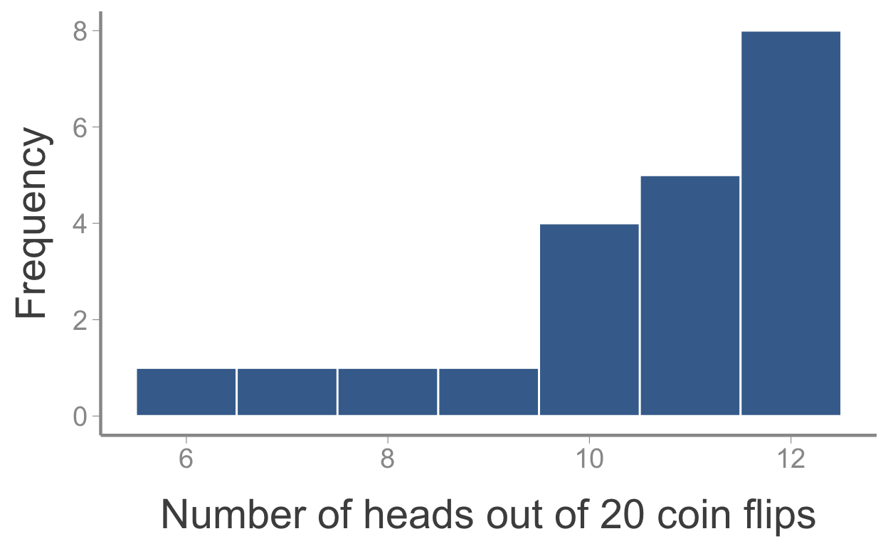

In this lab, we will continue learning how to use R to create and manipulate objects, with a particular focus on estimating abundance using the Lincoln-Peterson estimator.
Objectives
R functions used in this exercise:
prod()round()c()sum()Remember from lecture 2 that the Lincoln-Peterson method is used to estimate the abundance of a closed population using mark-recapture data. As a reminder, the Lincoln-Peterson estimator is:
\[N = \frac{n_1n_2}{m_2}\]
where \(n_1\) is the number of individuals captured (and marked) on the first sampling occasion, \(n_2\) is the number of individuals captured on the second sampling occasion, and \(m_2\) is the number of marked individuals in the second sample.
Let’s use R to estimate N for some made up data. In box below, create three new objects that represent the parameters in the Lincoln-Peterson estimator. Modify the following code to tell R that we captured 44 individuals on the first occasion, 32 on the second, and of those 32 sampled on the second occasion, 15 were marked:
n1 <-
n2 <-
m2 <- n1 <- 44
n2 <- 32
m2 <- 15Remember that R will ignore any code that follows a #. Before moving on, use comments to define what each object represents (e.g., Number of individuals captured on first occasion, Number of individuals captured on second occasion, Number of previously marked individuals captured on second occasion)
Now complete the following code to estimate \(N\) from our newly created objects using the Lincoln-Peterson:
n1 <- 44 # Number of individuals captured on first occasion
n2 <- 32 # Number of individuals captured on second occasion
m2 <- 15 # Number of previously marked individuals captured on second occasion
N <- What is the estimated abundance of this population? (hint - add code to print the new object N and rerun the code)
Remember that, in addition to our estimate of N, we always need to know something about how certain we are in the estimate. On your own, create a new object called varN to calculate the variance of our estimated N, remembering that:
\[\large var(\hat{N}) = \frac{(n_1 + 1)(n_2+1)(n_1-m_2)(n_2-m_2)}{(m_2+1)^2(m_2+2)}\]
n1 <- 44 # Number of individuals captured on first occasion
n2 <- 32 # Number of individuals captured on second occasion
m2 <- 15 # Number of previously marked individuals captured on second occasion
N <- n1 * n2 / m2 # Estimated abundance
varN <- Hints:
Remember that the entire numerator (and denominator) needs to be contained within parentheses;
To square something in R, use ^2
To better understand how we use vectors in R and to expand on our discussion of abundance estimation, we will learn how to use the Schnabel method to estimate \(N\).
In many studies, researchers attempt to re-sight marked individuals on more than 2 occasions. Unfortunately, the Lincoln-Peterson method is restricted to data from only 2 capture occasions, meaning that to use it, we have to throw out data from occasions \(3,4,...,T\).
In the 1930’s, a mathematician at the University of Wisconsin named Zoe Emily Schnabel expanded on the Lincoln-Peterson method to include \(>2\) occasions. The Schnabel method uses three pieces of information collected at each occasion:
\(C_t\), the number of captured individuals during occasion \(t\);
\(R_t\), the number of recaptures captured during occasion \(t\); and
\(M_t\), the number of individuals marked in the population at occasion \(t\) (or, the total number of marked individuals at risk of being captured on occasion \(t\)).
Using these data, the Schnabel estimator is:
\[\hat{N} = \frac{\sum_t(C_t \times M_t)}{\sum_t R_t}\]
Remember that \(\sum_t\) means the sum of the values across at \(T\) occasions.
To better understand what each of these data mean, we will use an example from Powell & Gale (2015) (pages 96-97). Students on a research trip to Puerto Rico did a 3-day mark-recapture study to estimate the number of Cuban rock iguanas (Cyclura nubila) on the island Isla Magueyes. On the first day, the students observed and marked (using latex paint) 155 iguanas. On the second day, they observed 175 individuals (109 marked and 66 unmarked; note that the 66 unmarked individuals were captured, marked, and released). On the third day, they observed 131 individuals (116 marked and 15 unmarked).
| Day | Animals Observed | Animal with marks |
|---|---|---|
| 1 | 155 | 0 |
| 2 | 175 | 109 |
| 3 | 131 | 116 |
Using what you have learned about creating vectors, complete the code below to create an object named Ct that contains the appropriate values for \(C_t\):
Ct <- c() # Number of captures during each occasionCt <- c(155, 175, 131) # Number of captures during each occasionNext do the same to create an object names Nt that contains the appropriate values for \(R_t\):
Rt <- c() # Number of recaptures during each occasionRt <- c(0, 109, 116) # Number of captures during each occasionWhat is \(M_t\)? On the first day, there are no previously marked individuals so \(M_1=0\). On the second day, there are 155 marked individuals in the population (all of the individuals marked on day 1) so \(M_2=155\). On day 3, the students could have observed individuals marked on the first day or individuals marked on the second day (\(175-109=66\) individuals marked on day 2) so \(M_3 = 155 + 66 = 221\). So:
Mt <- c(0, 155, 221) # Number of individuals at risk of captureNow to estimate \(\hat{N}\). We could do it by hand:
N <- ((155 * 0) + (175 * 155) + (131 * 221)) / (0 + 109 + 116)
NHowever, that is a lot of typing and it’s pretty likely we would make a mistake somewhere along the way (typos or misplaced parentheses). R is clever enough to allow us to use the previously created vectors. First, let’s see what happens when we multiply two vectors together:
Ct <- c(155, 175, 131) # Number of captures during each occassion
Rt <- c(0, 109, 116) # Number of recaptures during each occassion
Mt <- c(0, 155, 221) # Number of individuals at risk of capture
Ct * MtAs you can see, we created a new vector that is the same length as the original vectors (3). When you multiply (or add, subtract, or divide) two vectors, R multiplies the first element of first vector times the first element of the second vector, the second element of first vector times the second element of the second vector, the third element of first vector times the third element of the second vector, etc, and then combines them into a new vector.
We can also use the sum() function to add up all of the elements of a vector (similar to the prod() function we saw earlier). So:
Ct <- c(155, 175, 131) # Number of captures during each occassion
Rt <- c(0, 109, 116) # Number of recaptures during each occassion
Mt <- c(0, 155, 221) # Number of individuals at risk of capture
sum(Ct * Mt)
sum(Rt)Now, using the functions you just learned, complete the last line of code to estimate \(N\) using vector algebra and R’s built in functions. After you create the object N, using the round() function to round it to the nearest integer:
Ct <- c(155, 175, 131) # Number of captures during each occassion
Rt <- c(0, 109, 116) # Number of recaptures during each occassion
Mt <- c(0, 155, 221) # Number of individuals at risk of capture
N <-
round(x = , digits = )Hint: Remember that the Schnabel estimator is:
\[\hat{N} = \frac{\sum_t(C_t \times M_t)}{\sum_t R_t}\]
Your estimate should match the value you estimated previously. But much easier than typing it all out!
In the next homework, we will use R to better understand the properties of the LP estimator. To create this homework:
Create a new R Markdown file from the Homework-1 template:
1a) Click File -> New File -> R Markdown
1b) Click From Template and scroll down to WILD3810-Homework1
1c) In the Name box, type LastnameFirstname-Homework1
1d) Click Ok
Ensure that you can Knit the file
2a) Change “YOUR NAME HERE” in the header section to your name
2b) Click Knit to make sure you can knit the .Rmd file
2c) Save the .Rmd file as LastnameFirstname-homework1.Rmd in a project named LastNameFirstName-Lab1
Complete the assignment as directed in this tutorial
If you have any problems with these steps, be sure to get help from either the instructor or the TA
When the number of individuals in the capture-recapture samples is large, the Lincoln-Peterson estimator returns an unbiased estimated of \(N\). By unbiased, we mean that the Lincoln-Peterson estimator will on average match the true abundance of the population. It is important to note that bias applies to the average estimate:
for any given sample, our estimate of \(\hat{N}\) may be a little bigger or a little smaller than \(N\).
But if we took a large number of samples, we would get about the same number of low estimates as we get high estimates, so the average of all the samples would be \(N\).
In most real-life scenarios, we only get to take a single sample of the target population so we never know if our estimate is a little bigger than \(N\) or a little smaller than \(N\) (that is why we estimate uncertainty - so we at least know the range of plausible values of \(N\) given our data). However, we can use R to prove that the L-P estimator is unbiased by simulating a large number of samples from an imaginary population.
RThe key to using simulations is that we know the true values of all of the parameters in our model. In this case, the parameters are: \(N\) (the true population size) and \(p\) (the probability of capturing an individual in the population).
In the box below:
- Create an object called
N, give it a value of 10000, and add a comment (using#) stating what the object represents
- Create an object called
p, give it a value of 0.4, and add a comment (using#) stating what the object represents
Once you have completed these steps and the code runs correctly, copy and paste them to the R chunk named setup in the LastnameFirstname-homework1.Rmd file.
Now we need to tell R how many simulated samples we want to take. In the box below:
Create an object called
nSims, give it a value of 1000, and add a comment (using#) stating what the object represents
Again, copy and paste this code to the R chunk named setup in the LastnameFirstname-homework1.Rmd file (place them on a line below the code you pasted in the previous step)
The next step is a little more advanced.
We need to simulate random samples of the population to generate values of \(n1\), \(n2\) and \(m2\).
To clarify what this means, imagine we wanted to simulate the number of heads we would get if we flipped a coin 20 times. We know the probability of getting a heads is \(0.5\) but the actual number of heads might be any value between 0 and 20. In this case, the number of heads follows a binomial probability distribution. The binomial distribution requires two parameters, the number of “trials” (the number of coin flips or, in our case, the number of individuals we could capture - \(N\)) and the probability of “success” (heads or in our case capture).

n1In R, we can simulate random values from a binomial distribution using the rbinom() function. This function requires 3 arguments:
n - the number of simulated values (in this case, nSims),
size - the number of trials (in this case, total number of individuals we could capture), and
p - the probability of success (in this case, the probability of capture)
For example, to generate values of n1 we use the following code:
N <- 10000 # Population size
p <- 0.4 # Capture probability
nSims <- 1000 # Number of simulations
n1 <- rbinom(n = nSims, size = N, prob = p) # Simulate nSims values of n1Notice that in this case, we are sampling from the total population so size = N. When you run this line, you will get 1000 random values of n1.
Copy and paste the line that creates n1 to the R chunk named simulation in the LastnameFirstname-homework1.Rmd file.
Before proceeding, answer questions 1a and 1b in the .Rmd file.
Note that you will need to run the
setupandsimulationchunks (click the green arrow at the top right of the chunk) in order for your code in question 1b to run
n2Simulating \(n2\) is a little harder because, in theory, we need to know which of the \(n2\) individuals was marked in our previous sample. Since we are not keeping track of individuals, we’ll generate \(n2\) in a slightly round about way. First, we’ll simulate \(m2\), that is, the number of marked individuals that we recapture on the second occasion.
In the box below:
Fill in the correct size needed to generate the values of \(m2\)
N <- 10000 # Population size
p <- 0.4 # Capture probability
nSims <- 1000 # Number of simulations
n1 <- rbinom(n = nSims, size = N, prob = p) # Simulate nSims values of n1
m2 <- rbinom(n = nSims, size = , prob = p) # Simulate nSims values of m2Remember that we are not sampling \(m2\) from the total population but from the marked population
Copy and paste the line that creates m2 to the simulation R chunk in the LastnameFirstname-homework1.Rmd file (below the code you already copied to that chunk).
n2On the second occasion, we also capture some unmarked individuals so we need to simulate those values as well (we’ll call that sample nm2 for “not marked”)
In the box below:
Fill in the correct size needed to generate the values of \(nm2\), then run the code
N <- 10000 # Population size
p <- 0.4 # Capture probability
nSims <- 1000 # Number of simulations
n1 <- rbinom(n = nSims, size = N, prob = p) # Simulate nSims values of n1
m2 <- rbinom(n = nSims, size = n1, prob = p) # Simulate nSims values of m2
nm2 <- rbinom(n = nSims, size = , prob = p) # Simulate nSims values of nm2Remember that we are not sampling \(nm2\) from the total population but from the unmarked population
Now we can get \(n2\) by adding m2 and nm2 (remember how adding vectors works in R!). In the box above:
Create a new object called
n2that is the sum ofm2andnm2
Copy and paste the lines that create nm2 and n2 to the simulation R chunk in the LastnameFirstname-homework1.Rmd file.
Finally, we have everything we need to estimate \(\hat{N}\). In the box below:
Complete the code below to create an object called
Nhatthat includes the estimates of \(N\) from all 1000 simulations
N <- 10000 # Population size
p <- 0.4 # Capture probability
nSims <- 1000 # Number of simulations
n1 <- rbinom(n = nSims, size = N, prob = p) # Simulate nSims values of n1
m2 <- rbinom(n = nSims, size = n1, prob = p) # Simulate nSims values of m2
nm2 <- rbinom(n = nSims, size = N - n1, prob = p) # Simulate nSims values of nm2
n2 <- m2 + nm2 # total number of individuals captured on occasion 2
Nhat <- Because \(N\) is very big, our Nhat estimates should on average be unbiased. We can test this by taking the mean of all 1000 estimates (which should be very close to \(N\)). In the box above
Add a line that calculates the mean of the \(\hat{N}\) values
If our estimates are unbiased, the mean you just calculated should be very close to the true population size. We can calculate how are off our estimate is by taking the ratio of the mean value of \(\hat{N}\) to the true value of \(N\). c
Add a line to the box above that calculates this ratio
If our estimates are unbiased (i.e., on average, our estimates equal the true population size), this ratio should be very close to 1. Be sure you understand this point!
Once you have completed the code, copy the lines that estimate Nhat, mean of Nhat, and ratio to the simulation R chunk in the LastnameFirstname-homework1.Rmd file.
We can also visualize our 1000 estimates of \(\hat{N}\) by plotting them as a histogram, along with the mean and true value. A quick way to do this in R is using the hist() and abline() functions (we’ll learn more advanced ways to plot data in the next lab):
N <- 10000 # Population size
p <- 0.4 # Capture probability
nSims <- 1000 # Number of simulations
n1 <- rbinom(n = nSims, size = N, prob = p) # Simulate nSims values of n1
m2 <- rbinom(n = nSims, size = n1, prob = p) # Simulate nSims values of m2
nm2 <- rbinom(n = nSims, size = N - n1, prob = p) # Simulate nSims values of nm2
n2 <- m2 + nm2 # total number of individuals captured on occasion 2
Nhat <- (n1 * n2) / m2
hist(x = Nhat, breaks = 100)
abline(v = N, col = "blue")
abline(v = mean(Nhat), col = "red")As expected, our estimates appear to be unbiased (though note how much variation there is around the true value of \(N\)! Even when all of the assumptions of L-P are met, we could still over- or under-estimate \(N\) by 4-5%!)
Copy the last three lines of code from the box above to the simulation R chunk in the homework file.
At this point, you should be able to click the
Knitbutton and create an HTML file that shows all of your code and answers up to this point. If you get an error message, try to figure out whats causing it or ask the professor/TA for help
Now that we have the code needed to simulate data to analyze with the L-P estimator, it’s easy to explore the well-known bias in the model when sample sizes are small. By biased, we mean that an estimator will systematically overestimate or underestimate the true value. We’ll explore bias in the L-P estimator by continuing the simulation exercise:
In the homework file, copy the code from the chunks named setup and simulation into the chunk named LP2
Next, change \(N\) to 50 and run the code (click the green button at the top right of the chunk)
Use the results from this code to answer question 2
The reason for bias in L-P can more easily be understood through a simple example (borrowed from Powell 2015 pg 95). Imagine you have 10 white balls in a hat (\(N=10\)) and draw 4 randomly (\(p = 0.4\)).
You mark these 4 and return them to the bag.
If you draw 4 new balls, you expect to get \(0.4 \times 4 = 1.6\) marked balls.
But that’s impossible! Because the sample size is so small, the proportion of marked individuals in the second sample (\(\frac{m2}{n2}\)) can only be 0%, 25%, 50%, 75%, or 100%.
So if \(m2 = 2\), \(\hat{N} = \frac{4 \times 4}{2} = 8\). If \(m1 = 1\), then \(\hat{N} = \frac{4 \times 4}{2} = 16\). If \(m2 = 0\), we can’t even estimate \(N\)!
Chapman (1951) proposed a modified version of the L-P estimator that is unbiased even when sample sizes are small:
\[\hat{N} = \frac{(n_1+1) \times (n_2+1)}{m_2 + 1} - 1\]
Let’s see if it works. In the box below, complete the code to estimate Nhat using the Chapman modification:
N <- 50 # Population size
p <- 0.4 # Capture probability
nSims <- 1000 # Number of simulations
n1 <- rbinom(n = nSims, size = N, prob = p) # Simulate nSims values of n1
m2 <- rbinom(n = nSims, size = n1, prob = p) # Simulate nSims values of m2
nm2 <- rbinom(n = nSims, size = N - n1, prob = p) # Simulate nSims values of nm2
n2 <- m2 + nm2 # total number of individuals captured on occasion 2
Nhat_chapman <- Once done, copy the line of code that creates Nhat_chapman to the R chunk names chapman in your homework file (be sure to test that it runs by clicking the green arrows at the top right. For this chunk to run, you’ll also need to have run the LP2 chunk)
In the box below:
Add the necessary code to estimate the new mean of the \(\hat{N}_{chapman}\) estimates and the ratio of this new mean to the true \(N\).
Create a new histogram showing the \(\hat{N}_{chapman}\) estimates along with the true value and mean of the estimates.
N <- 50 # Population size
p <- 0.4 # Capture probability
nSims <- 1000 # Number of simulations
n1 <- rbinom(n = nSims, size = N, prob = p) # Simulate nSims values of n1
m2 <- rbinom(n = nSims, size = n1, prob = p) # Simulate nSims values of m2
nm2 <- rbinom(n = nSims, size = N - n1, prob = p) # Simulate nSims values of nm2
n2 <- m2 + nm2 # total number of individuals captured on occasion 2
Nhat_chapman <- (n1 + 1) * (n2 + 1) / (m2 + 1) - 1Add this code to the chapman R chunk and use the output to answer question 3
Now let’s make the population size really small.
In the box below:
Copy the code needed to simulate the L-P data (the code from the
chapmanchunck in the homework file)
Set
N <- 10
Use the Chapman modification to estimate the \(\hat{N}\)s.
Copy the above code into the chunk names chapman10 in the homework file and use the output to answer question 4